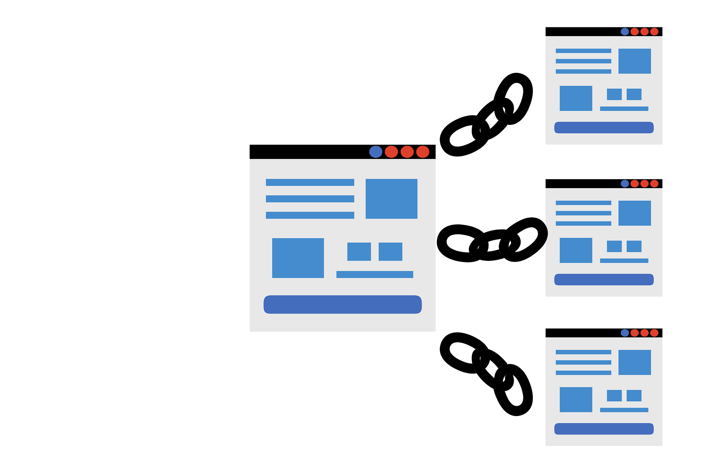

10 Essential SEO Tips for Beginners to Boost Traffic

10 SEO tips that will help your website rank higher on Google in 2022. It makes no difference whether you created the site for blogging or for business; online presence is extremely important these days. Today I will share some tips and tricks that will boost traffic to your website.
Let’s begin
- Determine Your Niche.
- Include Keywords That Are Relevant to the Content.
- Update your site.
- Recognize your target audience.
- Speed up your website.
- Well-designed website.
- Short and descriptive URL.
- Backlinks.
- Ensure your writing is digestible.
- Stay up to date on SEO.
Tip 1: Determine Your Niche -
To create high quality content, you need to know about your topic. If you have a strong hold on your topic, just remember half the problem is solved. Now you just need to promote that content. Interesting content gains more views than boring ones. Search engines like Google want to provide correct and valid information to their users. So, they promote websites that have original and quality content. If you are an expert in sports, then you must post sports-related content instead of cooking-related content. It will be easier for you to provide long and in-depth content on your site, which clears up all kinds of doubts regarding the topic for the reader. Adding statistics, case study examples, and including rare interviews, visualisation helps your channel grow.
Tip 2: Include Keywords That Are Relevant to Your Content -
Back in the days, keyword stuffing may have worked, but on today's sites, relevant keywords matter. The goal of SEO today is to tell Google what your content is all about. Keywords can help Google understand your content. Websites like Answer the Public, Reddit, and Explodingtopic.com will help you find keywords for your content. In the research, it was found out that very specific long tail keywords help you boost the traffic on your site. Their length makes them more specific than searches with fewer words. For example, the keyword "yoga" is a "head" keyword, but the keyword "yoga helps in weight loss" is a long-tail keyword. Specific and long keywords can bring new visitors to your site. Then the question arises, where to place the keywords to boost the traffic. Include your keyword.
- In the title of the page, try to start the title with a keyword.
- In first 100 words of your content,
- In the headings and URL of your site and,
- In the last 100 words of your content.
Also, try to include keywords that are closely related to your content; this will assist the search engine in its search for content. At LSI keyword provides closely related keywords to your content.
Tip 3: Update Your Site -
With time, everything changes, so you also need to update the content. Maybe some of the pages of yours aren't gaining views and it is about time to update their content. The question now arises, which type of update can we do to increase the ranking of the page?
- You can include external links and keywords on your site.
- Give a new title to your content.
- Make a table of contents and connect it to the appropriate sections.
- Update photographs, statistics related to your content, etc.
Tip 4: Understand Your Audience -
You must figure out which audience your website is targeting and check what the targeted audience is searching for related to that content. Better understanding of your customer's needs will help you to provide better content which will increase the traffic. For example, when you search for something on Google, just type in the keyword related to your content and see the suggestion provided by Google. From this, you can figure out what your customer wants to know related to that topic. When you know what your audience wants, simply give them what they want by providing content related to their search. You can go to a site like Reddit to see what people are discussing about your topic. which will provide a clear insight into your content. Your content should be epic, which forces your audience to stay on site. If you really care about the content you are creating, then post regularly and research what your audience wants. Trust me, this will really increase traffic on your site
Tip 5: Speed Up Your Website -
If your site is slow and takes a long time to load elements like images and text, then you will start losing your visitors. The slightest delay in the opening of a website in today's time will increase your bounce rate. It also affects your ranking on Google. According to Google's market research, 53% of mobile users leave the site if it takes more than 3 seconds to open. Avoid using CDN and third-party scripts because they are also responsible for slowing down the speed of your site. Some tools which you can use to check the speed of your website are Google PageSpeed Insights, Google’s Test My Site, or Pingdom. These sites analyse and offer detailed information on how you can improve the speed of your sight.
Tip 6: Well Designed Website -

Relevant keywords can only bring visitors to the site, holding the visitor on your site is only possible if you have a user-friendly interface. A website containing only text will get fewer views in comparison to a website with info-graphics, images, or videos. the research, it was found that content with a single image gets 94% more traffic than content without an image. Nobody likes to visit a messy website with huge paragraphs and an eye-straining design. All of the above-mentioned stuff can force your visitors to leave your site. If a user clicks the link and then soon comes out, it will affect your Google ranking. An appealing website not only keeps visitors on your site, but it also helps them build trust in your website. All you need to do is present your content in a clean and structured design that encourages sharing and brings readers back to your site. If you want to build an attractive and functional website quickly, you can use website builders like WordPress, Wix, etc.
Tip 7: Short and Descriptive URL -
You may be thinking, why is it important to apply SEO tactics to the URL of your website? Here is the answer: We know that keywords on the site help the search engine understand the content of your site. The search engine gives equal weight to the keywords in the URL. In the case of dynamic URLs, addresses rely on numbered pages. We just need to replace them with static URLs. To enable static URLs, visit the site's backend. In a static URL, you can provide significant keywords related to your site. But do not add too many keywords in the link; keep it informative and concise. Do add hyphens to break up long keywords.
Tip 8: Backlinks -
These links help in bringing visitors from other websites to our website. Backlinks also help in improving search engine ranking. A search engine considers the backlinks in determining the ranking of your site. The more high-quality backlinks to your site, the better your chance of getting a higher rank. They are also known as "external links" and "inbound links." For example, there is a site related to lifestyle, which posts all types of content related to lifestyle, and my site posts content related to yoga. Let's say lifestyle uses my site link in one of his articles. Any visitors who click that link on the lifestyle will be sent to my site. Backlinks are extremely important for SEO because they act as a vote of confidence in your website and content. Backlinks can be achieved through link building. For that, you just need to know who your competitors are and get their backlinks from them. Then use the Backlink Gap Tool to compare your current backlink profile with your competitors' and find new opportunities. Here are other backlink generating ideas:
- Try to join professional groups related to your topic. This will provide recognition and an increase in the incredibility of the content.
- Ask the publishers to cover any research.
- Use Google Search Console to find backlink opportunities for your website.
Tip 9: Ensure Your Writing Is Digestible -
With good SEO and an attractive look, a website must have the best reading experience for visitors, because bad user experience equals bad SEO. Tips for creating digestible content:
- When writing, be empathic with the reader.
- Instead of long paragraphs, use bullets and number lists to organise your content.
- Use a table or infographic for a better presentation of the content.
- Do compare the length of the article.
- Make an effort to include roughly the same amount of text in each point.
- Do add a table of content at the beginning of the website.
- For your content, use subtle, branded colour and visually appealing typography.
Tip 10: Stay Up to Date on SEO -
As you are aware, Google changes its search algorithms roughly 500 to 600 times each year. It does not change the SEO landscape, but instead brings new updates which may change the way we write SEO. Master the fundamentals of SEO to stay current. Continue to experiment with new techniques on your content; you never know which one will work and help you increase traffic. In today's time where thousands of pieces of content are present in terms of blogs, eBooks, podcasts, videos, and webinars for learning SEO won't be a problem.
Bonus Tips for Boosting Traffic on Your Site -
- Bonus Tips for Boosting Traffic on Your Site
- Try going to podcast interviews or meet ups with influencers, which will increase your audience.
- Concentrate on the quality of the article rather than the quantity.
- Your website should be responsive, which means it can adapt itself to any device.
- Provide a better visual experience with the help of images, videos, gifs, infographics, charts, and tables.
- Follow the "What is X" trick for the title. Here, "X" is the keyword people generally search for, but in the result, they want the definition of the keyword. Among the top 3 websites, two will start with "What".
- Leave enough space between your paragraphs.
- Remove sites that do not generate traffic.
Final Thoughts -
These 10 tips will help you at the start of your SEO journey. You can master SEO just through your consistent efforts. It is the beginning of your conquering the SERPS. For more SEO-related content, do visit our website on a regular basis.